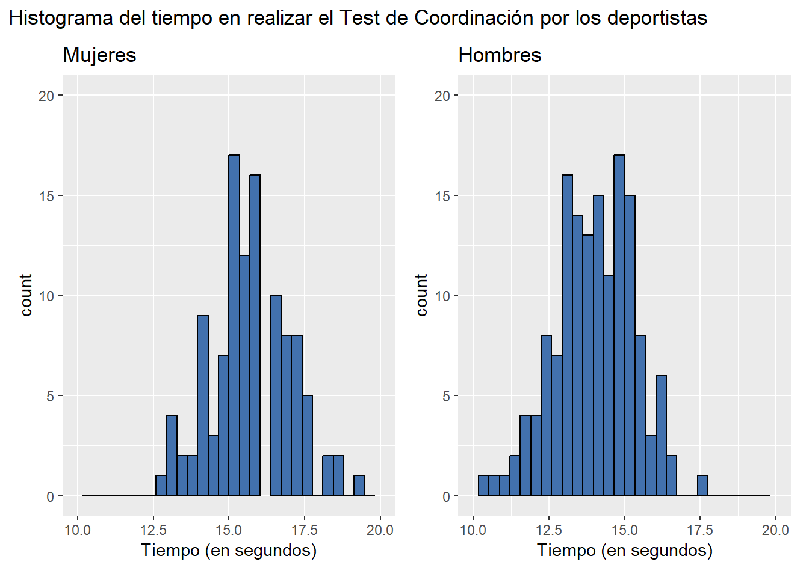
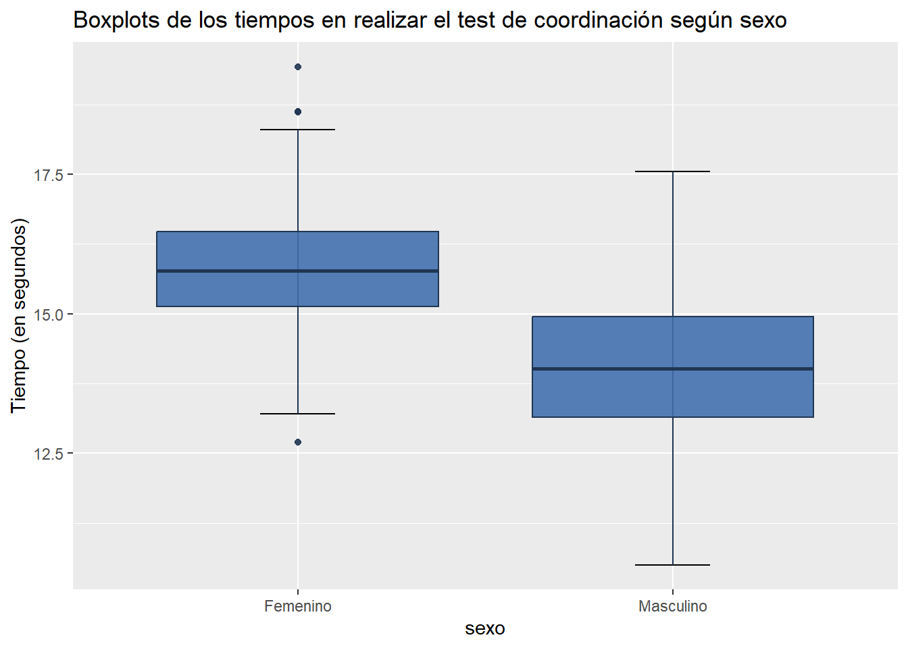
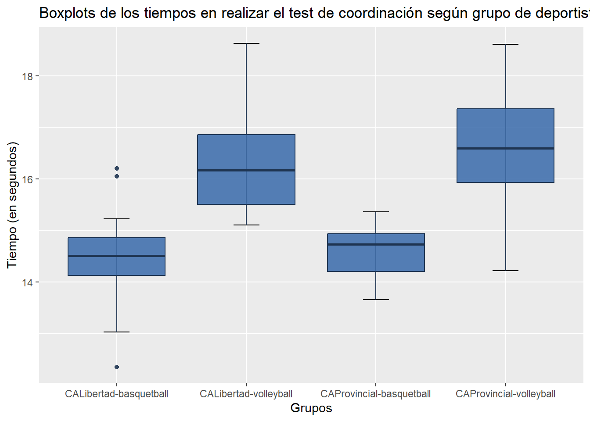
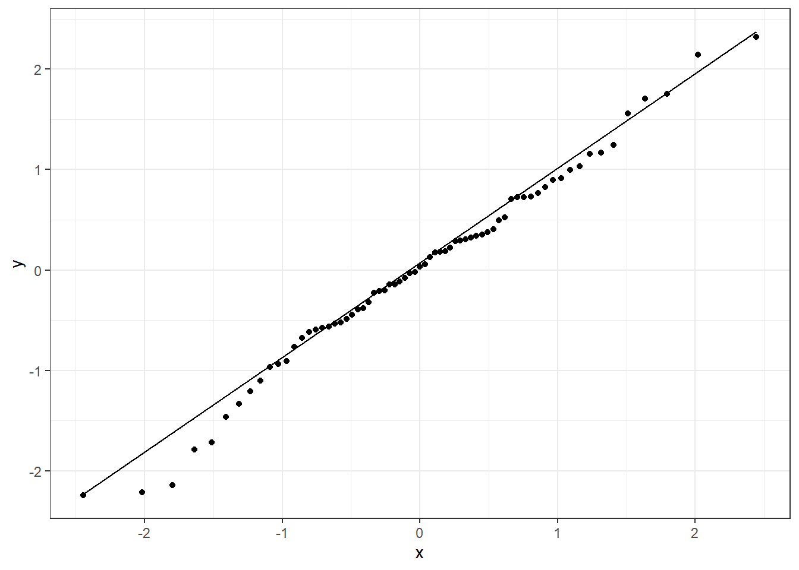
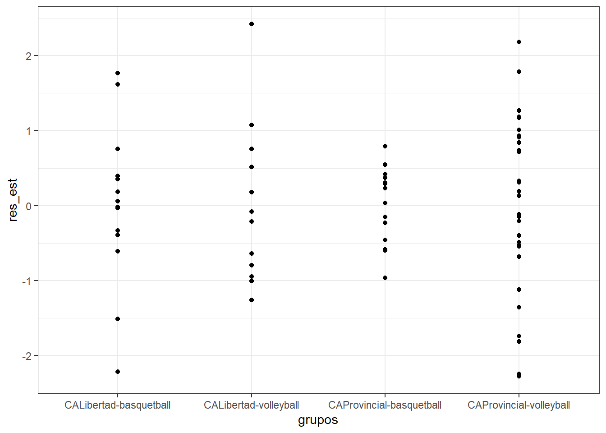

# Librerías
library(readxl)
library(cowplot)
library(tidyverse)Análisis de la Variancia (ANOVA)
Comparación de dos promedios poblacionales
Análisis comparativo en el que se presenta un factor con dos niveles. Cada nivel se refiere a una población diferente. El objetivo es comparar esas poblaciones en función de una variable (respuesta) continua y gaussiana.
Los datos corresponden a una muestra de deportistas federados, de 18 a 22 años, que entrenan y compiten en distintos clubes de la ciudad de Rosario. Se desea conocer si en promedio los hombres tienden a realizar el “Test de Coordinación de 4 tramos de 10 metros cada uno” en menos tiempo (segundos) que las mujeres.
head(base)# A tibble: 6 × 6
id sexo club deporte coord saltar
<dbl> <chr> <chr> <chr> <dbl> <dbl>
1 1 Femenino CLUB DEPORTIVO Y SOCIAL SPORTSMEN UNIDOS Volleyba… 15 32
2 2 Femenino CLUB DEPORTIVO Y SOCIAL SPORTSMEN UNIDOS Volleyba… 15.4 39
3 3 Femenino CLUB DEPORTIVO Y SOCIAL SPORTSMEN UNIDOS Volleyba… 16.3 32
4 4 Femenino CLUB ATLETICO PROVINCIAL Volleyba… 16.0 45
5 5 Femenino NOB Volleyba… 15.2 37
6 6 Femenino CLUB ATLETICO PROVINCIAL Volleyba… 15.1 51En primer lugar, se debe evaluar el cumplimiento de normalidad en ambas poblaciones/muestra/grupos. Se puede comprobar gráficamente a partir de histogramas y también a través de la prueba de Shapiro-Wilks, en el cual se prueba \(H_0) Y \sim \mathcal{N}(\mu,\sigma^2)\) versus \(H_1) Y \nsim \mathcal{N}(\mu,\sigma^2)\). La variable respuesta Y representa el tiempo (en segundos) que tarda un deportista en realizar el test de coordinación.

shapiro.test(base$coord[base$sexo=='Femenino'])
Shapiro-Wilk normality test
data: base$coord[base$sexo == "Femenino"]
W = 0.99027, p-value = 0.4983shapiro.test(base$coord[base$sexo=='Masculino'])
Shapiro-Wilk normality test
data: base$coord[base$sexo == "Masculino"]
W = 0.99461, p-value = 0.8573En este caso, se concluye que en base a la evidencia muestral y con un nivel de significación del \(5\%\) ambas poblaciones se distribuyen de manera normal.
Luego, se estudian medidas descriptivas y gráfico de boxplots para ambos grupos.
# Estadísticas descriptivas
base %>%
group_by(sexo) %>%
summarise(
n = n(),
media = mean(coord),
desvio = sd(coord)
)# A tibble: 2 × 4
sexo n media desvio
<chr> <int> <dbl> <dbl>
1 Femenino 130 15.8 1.22
2 Masculino 149 14.0 1.30# Boxplots
ggplot(base, aes(x = sexo, y = coord)) +
stat_boxplot(geom = "errorbar", # Bigotes
width = 0.2) +
geom_boxplot(fill = "#4271AE", colour = "#1F3552",
alpha = 0.9) +
ggtitle("Boxplots de los tiempos en realizar el test de coordinación según sexo") +
labs(y="Tiempo (en segundos)")
Se puede observar que los tiempos en realizar el test de coordinación en mujeres son levemente mayores que los tiempos obtenidos por los varones. A continuación, se evaluará si esta diferencia es significativa.
Antes de llevar a cabo la prueba de igualdad de medias, se debe chequear si las variancias entre grupos son iguales: \(H_0) \sigma_F^2=\sigma_M^2\) versus \(H_1) \sigma_F^2 \neq \sigma_M^2\).
# Test de igualdad de variancias
var.test(coord ~ sexo, base, alternative = "two.sided")
F test to compare two variances
data: coord by sexo
F = 0.88103, num df = 129, denom df = 148, p-value = 0.4611
alternative hypothesis: true ratio of variances is not equal to 1
95 percent confidence interval:
0.6313037 1.2343574
sample estimates:
ratio of variances
0.8810328 Se cumple la igualdad de variancias, por lo que se postula la prueba de igualdad de medias: \(H_0) \mu_F=\mu_M\) versus \(H_1) \mu_F > \mu_M\).
- 1º enfoque: Prueba “t de student”
# Test de medias
t.test(coord ~ sexo, base, alternative = "greater", var.equal = T)
Two Sample t-test
data: coord by sexo
t = 11.846, df = 277, p-value < 2.2e-16
alternative hypothesis: true difference in means between group Femenino and group Masculino is greater than 0
95 percent confidence interval:
1.540192 Inf
sample estimates:
mean in group Femenino mean in group Masculino
15.79131 14.00181 - 2º enfoque: ANOVA
Se postula el siguiente modelo de efectos fijos: \(y_{ij} = \mu + \tau_i + e_{ij}, \ i=\overline{1,2} \ \land \ j=\overline{1,n_i}\), donde:
- $y_{ij} =$ resultado del test de coordinación del deportista $j$ del grupo $i$.
- $\mu =$ valor de referencia del test de coordinación.
- $\tau_i =$ efecto grupo $i$.
- $e_{ij} =$ error aleatorio del deportista $j$ del grupo $i$.Además, \(e_{ij} \sim \mathcal{N}(0,\sigma^2)\) e independientes.
A continuación, se muestra la tabla ANOVA:
# Tabla ANOVA
anova <- aov(coord~sexo, base)
summary(anova) Df Sum Sq Mean Sq F value Pr(>F)
sexo 1 222.3 222.32 140.3 <2e-16 ***
Residuals 277 438.8 1.58
---
Signif. codes: 0 '***' 0.001 '**' 0.01 '*' 0.05 '.' 0.1 ' ' 1Para ambos enfoques, se obtiene que en base a la evidencia muestral y con un nivel de significación del \(5\%\), se rechaza la hipótesis nula, es decir, en promedio a las mujeres les lleva más tiempo realizar el test de coordinación que a los hombres.
ANOVA para un criterio de clasificación
Análisis comparativo en el que se presenta un factor de clasificación con dos o más niveles. Cada nivel se refiere a una población diferente. El objetivo es comparar dichas poblaciones en función de una variable (respuesta) continua y gaussiana a través de un Análisis de la Variancia (ANOVA).
Los datos brindados corresponden a una muestra de deportistas federados, de 18 a 22 años, que entrenan y compiten en deportes y clubes diferentes de la ciudad de Rosario. Se desea conocer si existen diferencias significativas en el resultado medio del “test de Coordinación en 4 tramos de 10 metros cada tramo” entre los grupos de deportistas. Los cuatro grupos comparados están conformados de la siguiente manera:
- Grupo 1: deportistas jugadores de basquetball del Club Atlético Libertad
- Grupo 2: deportistas jugadores de volleyball del Club Atlético Libertad
- Grupo 3: deportistas jugadores de basquetball del Club Atlético Provincial
- Grupo 4: deportistas jugadores de volleyball del Club Atlético Provincial
# Librerías
library(readxl)
library(cowplot)
library(tidyverse)head(base_grupos)# A tibble: 6 × 7
id sexo club deporte coord saltar grupos
<dbl> <chr> <chr> <chr> <dbl> <dbl> <chr>
1 4 Femenino CLUB ATLETICO PROVINCIAL Volleyball 16.0 45 CAProvincial…
2 6 Femenino CLUB ATLETICO PROVINCIAL Volleyball 15.1 51 CAProvincial…
3 8 Masculino CLUB ATLETICO PROVINCIAL Volleyball 14.7 53 CAProvincial…
4 11 Masculino CLUB ATLETICO PROVINCIAL Volleyball 14.2 43 CAProvincial…
5 12 Femenino CLUB ATLETICO PROVINCIAL Volleyball 18.6 49 CAProvincial…
6 13 Femenino CLUB ATLETICO PROVINCIAL Volleyball 17.6 41 CAProvincial…table(base_grupos$grupos)
CALibertad-basquetball CALibertad-volleyball CAProvincial-basquetball
14 12 14
CAProvincial-volleyball
29 Se evalua el cumplimiento de normalidad en los grupos en estudio. Se puede comprobar a través de la prueba de Shapiro-Wilks, en el cual se prueba \(H_0) Y \sim \mathcal{N}(\mu,\sigma^2)\) versus \(H_1) Y \nsim \mathcal{N}(\mu,\sigma^2)\). La variable respuesta Y representa el tiempo (en segundos) que tarda un deportista en realizar el test de coordinación.
shapiro.test(base_grupos$coord[base_grupos$grupos=='CALibertad-basquetball'])
Shapiro-Wilk normality test
data: base_grupos$coord[base_grupos$grupos == "CALibertad-basquetball"]
W = 0.95211, p-value = 0.594shapiro.test(base_grupos$coord[base_grupos$grupos=='CALibertad-volleyball'])
Shapiro-Wilk normality test
data: base_grupos$coord[base_grupos$grupos == "CALibertad-volleyball"]
W = 0.92313, p-value = 0.3129shapiro.test(base_grupos$coord[base_grupos$grupos=='CAProvincial-basquetball'])
Shapiro-Wilk normality test
data: base_grupos$coord[base_grupos$grupos == "CAProvincial-basquetball"]
W = 0.9574, p-value = 0.6801shapiro.test(base_grupos$coord[base_grupos$grupos=='CAProvincial-volleyball'])
Shapiro-Wilk normality test
data: base_grupos$coord[base_grupos$grupos == "CAProvincial-volleyball"]
W = 0.96929, p-value = 0.5407En este caso, se concluye que en base a la evidencia muestral y con un nivel de significación del \(5\%\) las poblaciones se distribuyen de manera normal.
Luego, se estudian medidas descriptivas y gráfico de boxplots para los cuatro grupos de deportistas.
# Estadísticas descriptivas
base_grupos %>%
group_by(grupos) %>%
summarise(
n = n(),
media = mean(coord),
desvio = sd(coord)
)# A tibble: 4 × 4
grupos n media desvio
<chr> <int> <dbl> <dbl>
1 CALibertad-basquetball 14 14.5 1.02
2 CALibertad-volleyball 12 16.3 1.02
3 CAProvincial-basquetball 14 14.6 0.493
4 CAProvincial-volleyball 29 16.5 1.15 # Boxplots
ggplot(base_grupos, aes(x = grupos, y = coord)) +
stat_boxplot(geom = "errorbar",
width = 0.2) +
geom_boxplot(fill = "#4271AE", colour = "#1F3552",
alpha = 0.9) +
ggtitle("Boxplots de los tiempos en realizar el test de coordinación según grupo de deportistas") +
labs(y="Tiempo (en segundos)", x="Grupos")
Se puede observar que los tiempos en realizar el test de coordinación difieren dependiendo del grupo de deportistas. A continuación, se evaluará si esta diferencia es significativa.
Se plantea el siguiente modelo de efectos fijos: \(y_{ij} = \mu + \tau_i + e_{ij}, \ i=\overline{1,a} \ \land \ j=\overline{1,n_i}\), donde:
\(y_{ij} =\) resultado del test de coordinación del deportista \(j\) del grupo \(i\).
\(\mu =\) valor de referencia del test de coordinación.
\(\tau_i =\) efecto grupo \(i\).
\(e_{ij} =\) error aleatorio del deportista \(j\) del grupo \(i\).
Además, \(e_{ij} \sim \mathcal{N}(0,\sigma^2)\) e independientes.
A continuación, se muestra la tabla ANOVA:
# Tabla ANOVA
anova <- aov(coord~grupos, base_grupos)
summary(anova) Df Sum Sq Mean Sq F value Pr(>F)
grupos 3 58.78 19.594 19.53 3.88e-09 ***
Residuals 65 65.21 1.003
---
Signif. codes: 0 '***' 0.001 '**' 0.01 '*' 0.05 '.' 0.1 ' ' 1El test de hipótesis para responder al objetivo resulta: \(H_0) \tau_a = \tau_b =\tau_c =\tau_d\) versus \(H_1) Al \ menos \ un \ \tau_i \neq del \ resto, i=\overline{1,a}\).
En base a la evidencia muestral y con un nivel de significación del \(5\%\), se rechaza la hipótesis nula, es decir, existen diferencias signficativas en los tiempos que les lleva realizar el test de coordinación en al menos uno de los grupos de deportistas.
Comparaciones múltiples
El problema sobre la comparación de varios grupos que se resuelve a través del ANOVA es interesante y útil, pero no siempre suficiente. En caso de rechazar la hipótesis nula, se concluirá que no todos los tratamientos tienen los mismos promedios poblacionales pero, seguramente, el investigador querrá saber cuál o cuáles son los promedios diferentes o cuáles son iguales entre sí.
Para conocer entre cuales grupos se presentan las diferencias se utilizará el procedimiento de Comparaciones múltiples, el cual tiene como objetivo dar respuesta a las siguientes hipótesis (una vez que se rechazó la igualdad de medias de tratamientos con la prueba F del ANOVA): \(H_0) \mu_i = \mu_{i'}\) versus \(H_1) \mu_i \neq \mu_{i'}, \ i \neq i' \ \land i,i'=\overline{1,a}\).
Se compararán los grupos de deportistas estudiados en la sección 2 de ANOVA para un criterio de clasificación.
# Librería
library(agricolae)Se ajusta el modelo para los datos tal como se planteó en la sección 2 (\(y_{ij} = \mu + \tau_i + e_{ij}, \ i=\overline{1,a} \ \land \ j=\overline{1,n_i}\)).
modelo <- lm(coord~grupos, base_grupos)
summary(modelo)
Call:
lm(formula = coord ~ grupos, data = base_grupos)
Residuals:
Min 1Q Median 3Q Max
-2.2445 -0.5650 0.0350 0.7055 2.3233
Coefficients:
Estimate Std. Error t value Pr(>|t|)
(Intercept) 14.4914 0.2677 54.133 < 2e-16 ***
gruposCALibertad-volleyball 1.8152 0.3940 4.607 1.96e-05 ***
gruposCAProvincial-basquetball 0.1036 0.3786 0.274 0.785
gruposCAProvincial-volleyball 1.9731 0.3260 6.053 7.86e-08 ***
---
Signif. codes: 0 '***' 0.001 '**' 0.01 '*' 0.05 '.' 0.1 ' ' 1
Residual standard error: 1.002 on 65 degrees of freedom
Multiple R-squared: 0.4741, Adjusted R-squared: 0.4498
F-statistic: 19.53 on 3 and 65 DF, p-value: 3.877e-09Se presentan algunos métodos para dar respuesta a nuestra prueba de hipótesis.
# Método de la diferencia mínima significativa (LSD: Least Significant Difference)
LSD <- LSD.test(modelo, "grupos", p.adj = "none")
LSD$statistics
MSerror Df Mean CV
1.0033 65 15.65739 6.39729
$parameters
test p.ajusted name.t ntr alpha
Fisher-LSD none grupos 4 0.05
$means
coord std r se LCL UCL
CALibertad-basquetball 14.49143 1.0188218 14 0.2677019 13.95679 15.02607
CALibertad-volleyball 16.30667 1.0220953 12 0.2891511 15.72919 16.88414
CAProvincial-basquetball 14.59500 0.4933987 14 0.2677019 14.06036 15.12964
CAProvincial-volleyball 16.46448 1.1505328 29 0.1860015 16.09301 16.83595
Min Max Q25 Q50 Q75
CALibertad-basquetball 12.35 16.20 14.125 14.510 14.8600
CALibertad-volleyball 15.10 18.63 15.505 16.165 16.8575
CAProvincial-basquetball 13.66 15.36 14.205 14.725 14.9350
CAProvincial-volleyball 14.22 18.61 15.930 16.590 17.3600
$comparison
NULL
$groups
coord groups
CAProvincial-volleyball 16.46448 a
CALibertad-volleyball 16.30667 a
CAProvincial-basquetball 14.59500 b
CALibertad-basquetball 14.49143 b
attr(,"class")
[1] "group"# Método (prueba) de Duncan
duncan <- duncan.test(modelo, "grupos")
duncan $statistics
MSerror Df Mean CV
1.0033 65 15.65739 6.39729
$parameters
test name.t ntr alpha
Duncan grupos 4 0.05
$duncan
NULL
$means
coord std r se Min Max Q25
CALibertad-basquetball 14.49143 1.0188218 14 0.2677019 12.35 16.20 14.125
CALibertad-volleyball 16.30667 1.0220953 12 0.2891511 15.10 18.63 15.505
CAProvincial-basquetball 14.59500 0.4933987 14 0.2677019 13.66 15.36 14.205
CAProvincial-volleyball 16.46448 1.1505328 29 0.1860015 14.22 18.61 15.930
Q50 Q75
CALibertad-basquetball 14.510 14.8600
CALibertad-volleyball 16.165 16.8575
CAProvincial-basquetball 14.725 14.9350
CAProvincial-volleyball 16.590 17.3600
$comparison
NULL
$groups
coord groups
CAProvincial-volleyball 16.46448 a
CALibertad-volleyball 16.30667 a
CAProvincial-basquetball 14.59500 b
CALibertad-basquetball 14.49143 b
attr(,"class")
[1] "group"# Método de Student-Newman-Keuls
snk <- SNK.test(modelo, "grupos")
snk$statistics
MSerror Df Mean CV
1.0033 65 15.65739 6.39729
$parameters
test name.t ntr alpha
SNK grupos 4 0.05
$snk
NULL
$means
coord std r se Min Max Q25
CALibertad-basquetball 14.49143 1.0188218 14 0.2677019 12.35 16.20 14.125
CALibertad-volleyball 16.30667 1.0220953 12 0.2891511 15.10 18.63 15.505
CAProvincial-basquetball 14.59500 0.4933987 14 0.2677019 13.66 15.36 14.205
CAProvincial-volleyball 16.46448 1.1505328 29 0.1860015 14.22 18.61 15.930
Q50 Q75
CALibertad-basquetball 14.510 14.8600
CALibertad-volleyball 16.165 16.8575
CAProvincial-basquetball 14.725 14.9350
CAProvincial-volleyball 16.590 17.3600
$comparison
NULL
$groups
coord groups
CAProvincial-volleyball 16.46448 a
CALibertad-volleyball 16.30667 a
CAProvincial-basquetball 14.59500 b
CALibertad-basquetball 14.49143 b
attr(,"class")
[1] "group"# Método Tukey o de la “Diferencia Honestamente Significativa (HSD)”
hsd <- HSD.test(modelo, "grupos")
hsd$statistics
MSerror Df Mean CV
1.0033 65 15.65739 6.39729
$parameters
test name.t ntr StudentizedRange alpha
Tukey grupos 4 3.728941 0.05
$means
coord std r se Min Max Q25
CALibertad-basquetball 14.49143 1.0188218 14 0.2677019 12.35 16.20 14.125
CALibertad-volleyball 16.30667 1.0220953 12 0.2891511 15.10 18.63 15.505
CAProvincial-basquetball 14.59500 0.4933987 14 0.2677019 13.66 15.36 14.205
CAProvincial-volleyball 16.46448 1.1505328 29 0.1860015 14.22 18.61 15.930
Q50 Q75
CALibertad-basquetball 14.510 14.8600
CALibertad-volleyball 16.165 16.8575
CAProvincial-basquetball 14.725 14.9350
CAProvincial-volleyball 16.590 17.3600
$comparison
NULL
$groups
coord groups
CAProvincial-volleyball 16.46448 a
CALibertad-volleyball 16.30667 a
CAProvincial-basquetball 14.59500 b
CALibertad-basquetball 14.49143 b
attr(,"class")
[1] "group"Para cualquiera de los métodos presentados, se concluye que con un nivel de significación del 5%, los tiempos medios en realizar el test de coordinación difieren para los deportistas de distintos deportes (basquetball-volleyball), y no difieren entre diferentes clubes (CAL-CAP).
Comprobación de supuestos
La validez de las inferencias extraídas a partir del modelo y su correspondiente ANOVA, las pruebas de hipótesis y los intervalos de confianza, se basan en el cumplimiento de los supuestos postulados. Si el modelo es de efectos fijos, se postula el supuesto de independencia, normalidad e igualdad de variancias para los errores aleatorios.
Como los errores del modelo son desconocidos, la verificación de los mismos se realiza sobre una estimación de esos errores, los que habitualmente denominamos residuos. Se utilizarán los residuos ordinarios (\(\hat e_{ij} = y_{ij}-\bar y_{i.}\)) y los residuos estandarizados (\(w_{ij} = \frac{\hat e_{ij}}{\sqrt{CME}}\)).
# Residuos ordinarios y estandarizados
base_grupos$res <- residuals(modelo)
base_grupos$res_est <- rstandard(modelo)- Normalidad
La normalidad de los residuos se puede probar a través de técnicas gráficas (qq-plot, histogramas) y también a partir de pruebas de hipótesis (Shapiro-Wilks, Lilliefors).
# qq-plot de cuantiles empíricos versus cuantiles teóricos
ggplot(base_grupos,aes(sample=res)) +
stat_qq() +
stat_qq_line() +
theme_bw()
# Test de Shapiro-Wilks (H0) Los errores se distribuyen normales)
shapiro.test(base_grupos$res)
Shapiro-Wilk normality test
data: base_grupos$res
W = 0.98772, p-value = 0.737# Test de Lilliefors (H0) Los errores se distribuyen normales)
library(nortest)
lillie.test(base_grupos$res)
Lilliefors (Kolmogorov-Smirnov) normality test
data: base_grupos$res
D = 0.061547, p-value = 0.7458- Homocedasticidad (variancia constante)
La homocedasticidad de los residuos se puede probar a través de técnicas gráficas (residuos versus valores predichos) y también a partir de pruebas de hipótesis (Levene, Bartlett).
# Gráfico de w_ij vs. predichos
ggplot(base_grupos, aes(x=grupos, y=res_est)) +
geom_point() +
theme_bw()
# Test de Levene (H0) Todas las vcias son iguales vs. H1) Al menos una distina del resto)
library(car)
leveneTest(base_grupos$res_est, group = base_grupos$grupos)Levene's Test for Homogeneity of Variance (center = median)
Df F value Pr(>F)
group 3 2.1288 0.1051
65 - Independencia
La independencia de los errores se estudia a partir de la lógica del problema. En la práctica, por lo general, no se puede verificar debido a que no existe un orden temporal en las observaciones, en tal caso suele ser útil graficar los residuos en función del orden (o momento) en que fue recolectado el dato.
Como este supuesto es difícilmente remediable, es necesario poner mucho esfuerzo en el momento de obtener los datos.
Para nuestro ejemplo, se cumplen los supuestos de normalidad y homocedasticidad. En el caso de que alguno de ellos no se cumpla, se debería recurrir a alguno de los siguientes métodos:
- Transformaciones: Logarítmica, Raíz Cuadrada, etcétera.
- Técnicas no paramétricas: Friedman, Kruskal-Wallis.
- Modelos Lineales Generalizados.